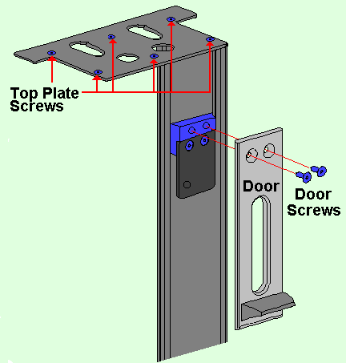
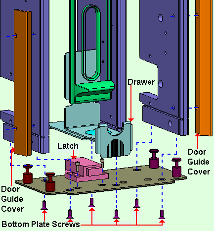

This procedure describes how to remove and clean the doors and drawers of the substrate loader.
Reference Drawings:


Remove and clean the substrate doors.
Open the main upper right cover.
Remove the top air line from one of the substrate loader air cylinders to release the air pressure from the system.
Reattach the air line.
Loosen the six screws on the top plate of the substrate loader two turns.
Note: You do not need to remove these screws.
Lift each load door to the up position, and leave the substrate bottles in place.
Remove the two screws that attach the substrate doors to the substrate loader.
Slide one door to the top, and spread the side walls enough to remove the door.
Remove the second substrate door.
If the door guide is sticky with splashed substrate, thoroughly clean the door and the door guides with DI water, and then replace the door.
If the substrate door does not glide out smoothly, remove the substrate drawers, access the drawer latch, and clean the assembly.
Remove power from the motors by using the switch on the Power Distribution PCB labeled "All DC power (except CPU and reagent coolers)".
Remove both bottles of substrate.
Caution: Be careful not to touch the draw tube with your fingers.
From the side being worked on, remove the two (7/64) screws that secure the cover on the door guide, and then remove the cover.
Loosen the four captive screws mounting the substrate loader module to the framus. Pull the captive pin on the left side of the module, and slide the module upward so that the substrate loader module can be pulled away from the instrument.
Position the substrate loader so the underside can be accessed.
On the side being worked on, remove the two screws securing the center door guide to the bottom plate and the two screws securing the door guide.
Spread the side walls enough to remove the drawer from the substrate loader.
Note: To remove the substrate drawer from the loader, lift the 1/4-inch lip on the back of the drawer up and over the latch.
Clean the drawer, drawer guide slots, and bottom of the substrate loader with DI water.
Remove the two (3/32) screws holding the latch in position, and then remove the latch.
Clean the latch with DI water.
Note: The latch can be disassembled, cleaned with DI water, and then lubricated with 3-in-1 oil.
If after cleaning, the latch still does not push in and out smoothly, replace the latch.
To avoid these issues further, train the customer to remove and replace the substrate smoothly and carefully to prevent splashing.
Attach the latch to the bottom plate with the two (3/32) screws that were removed earlier.
Spread the side walls enough to slide the drawer into the substrate loader.
Attach the screws removed from the bottom plate to secure the side and center walls.
Place the substrate loader into position on the framus, and then tighten the four captive screws.
Attach the black guide to the side wall with the two (7/64) screws that were removed earlier.
Replace the substrate loader door.
Spread the side walls enough to replace the substrate door.
Attach the substrate door to the substrate loader.
Tighten the six screws on the top plate of the substrate loader module.
If the substrate bottles were removed, replace them.
If power was removed, then restore power to the motors by using the switch on the Power Distribution PCB labeled "All DC power (except CPU and reagent coolers)".
Close the main upper right cover.
Initialize the instrument.
Verify substrate loader operation by priming the substrate 15 cycles.
Verify system operation.
Perform system verification as stated in the Verification of Service Repair document .